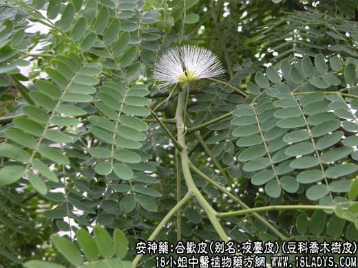

【中药概述】
合欢皮，别名：合昏皮,夜台皮,合欢木皮，为豆科乔木植物合欢的干燥树皮。甘、平。归心、脾肝经。
1．解郁安神：用于心神不安，失眠健忘等，常与夜交藤配伍；阴血不足，兼见腰痿、头晕者，可与地黄，鸡血藤等配伍。
2．活血化瘀：用于跌打损伤、骨折肿痛等，可与当归，川芎，赤芍，桃仁等同用。
3．消痈：用于肺痈，疮肿等，如（<景岳全书>合欢皮饮：白蔹，合欢皮）。
【药效鉴别】
合欢皮解郁安神，兼能活血消肿，通利关节而治跌打瘀痛。
【药理作用】
内服有强壮、兴奋、镇痛、驱虫及利尿作用。
【化学成分】
含皂甙、鞣质、合欢氨基酸。
【用量用法】
10——15g，水煎服，或入剂。
【附】
合欢花（为豆科植物合欢的花蕾）。甘，平。归心、肝经。解郁安神，理气开胃。适用于忧郁失眠（本品15g，夜交藤，郁金10g煎服），胸中郁闷，胃口不好等症。本品长于解郁。3～10g，水煎服，或入剂。
本文解释权归中药名称大全，本文地址https://www.daquan.com/post/1966.html